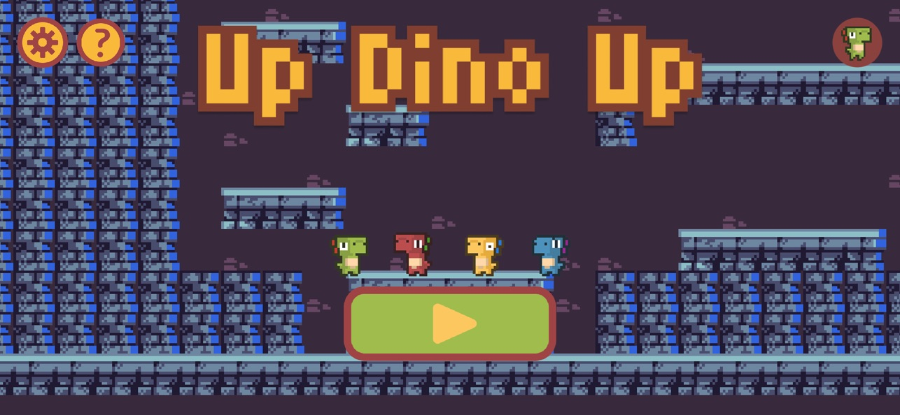
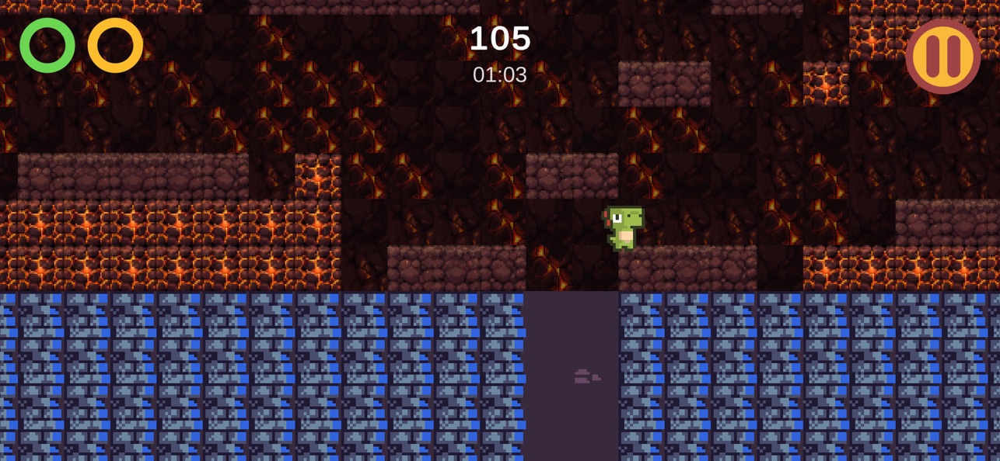
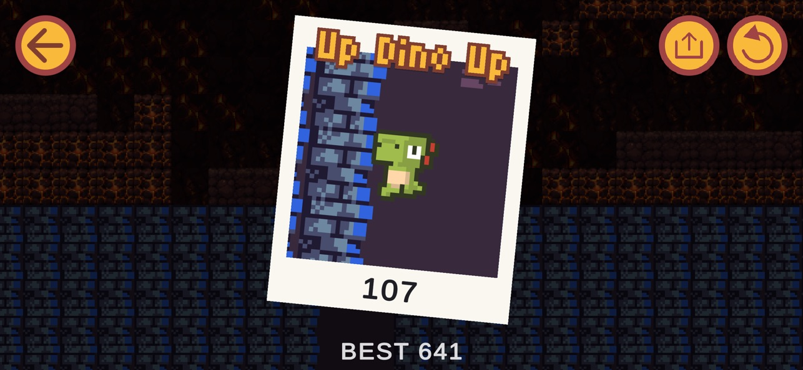

Up Dino Up
A jump-and-run with no on-screen buttons. A little dino climbs an endless tower using two gestures, and every climb is generated fresh.


- LAUNCHED
- 2026-08-24
- PLATFORMS
- iPhone · Android
- PLAYABLE DINOS
- 4
- LANGUAGES
- 23
Can a platformer feel fast without virtual buttons?
Touch platformers usually copy a gamepad onto the glass. Up Dino Up uses two gestures that cover the whole screen instead: hold a side to run, swipe to jump. Combined, they give fast, agile movement, including wall-jumps and double jumps, without the thumb ever hunting for a button.
-
GESTURE 1
Hold a side to run
The left or right half of the screen is the whole control. Let go to stop.
-
GESTURE 2
Swipe to jump
Swipe while running to leap, then swipe again in the air for a double jump.
-
COMBINED
Kick off the walls
Run into a wall and swipe to wall-jump, so the tower climbs fast while crumbling blocks keep you moving.
From the App Store



From dark caves to open sky, never the same climb twice
Every run is generated fresh, so players learn the movement rather than memorising a level.